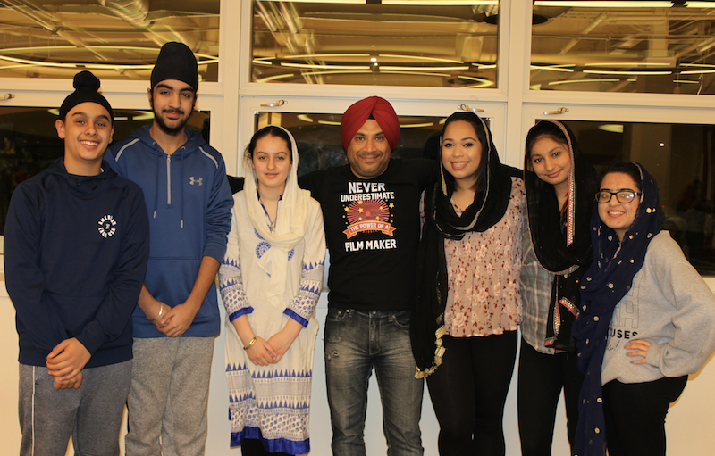
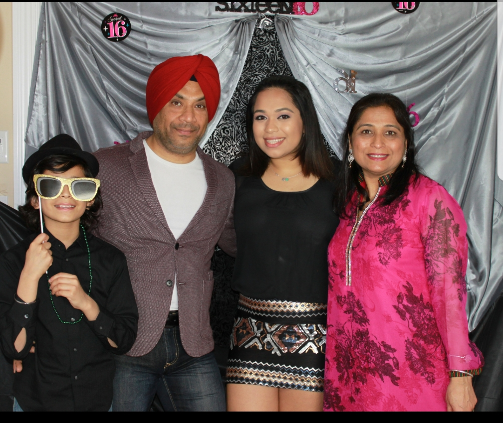
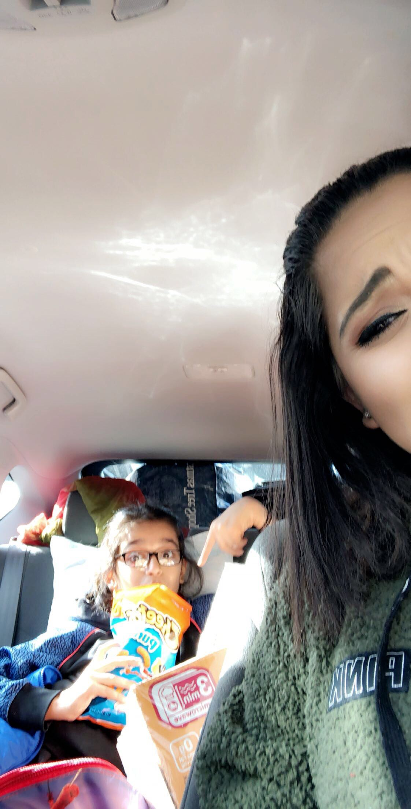

Hello again!

Here is more about me! :)

I have been a swimmer my whole life! I did synchronized swimming for 6 years, competitive swimming for 4 years, and I teach swim lessons and lifeguard! In 2016, I traveled to Greensboro, NC to participate in the Junior Olympics for synchronized swimming. I also used to competitive swim for my highschool, Worcester Academy. Qualifying for championships, my main events were fly and backstroke.
In addition to swimming, I am also very passionate about filmmaking. I co-founded Film Neev, an organization intended to educate individuals about the religion of Sikhism as well as teach the art of filmmaking. We use filmmaking as a medium to spread awareness about Sikhism as well as shine light on the discrimination and hate crimes Sikhs face on a regular basis.
This is my family!
This is my little brother! He's one of my bestfriends and I love him so much (& cheeto puffs as pictured). Fun Fact : We have the same birthday - we are exactly 8 years apart


I'm indian!

I was born and raised in Boston, so I'm a big Boston sports fan! I'm a huge football fan and I love the Patriots! 6 RINGS!!!